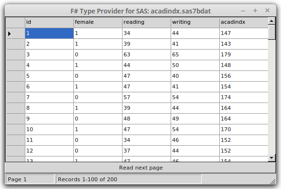

The SAS dataset (sas7bdat) type provider allows exploratory programming with SAS files and provides native access to SAS datasets. No SAS software or OLE DB providers required.
If you are using F# Interactive, you first need to reference the SAS type
provider assembly. Assuming you obtain the package from NuGet and the assembly
is in packages, this would look as follows:
#I @"packages/FSharp.Data.Toolbox.Sas.0.3/lib/net40"
#r "FSharp.Data.Toolbox.Sas.dll"
open FSharp.Data.Toolbox.Sas
The library gives you a parameterized type provider SasFileTypeProvider that
takes the SAS data file as an argument:
[<Literal>]
let sasPath = @"../tests/FSharp.Data.Toolbox.Sas.Tests/files/acadindx.sas7bdat"
let sasFile = new SasFileTypeProvider<sasPath>()
After openning the dataset, you can call methods to access SAS metadata and the data itself.
The following examples show how to access meta-information about SAS dataset.
let datasetName = sasFile.Header.DataSet.Trim()
let architecture = sasFile.Header.Bits
let rowCount = sasFile.MetaData.RowCount
// Get a list of dataset columns
let cols = sasFile.MetaData.Columns
printfn "Number of columns: %d" (cols |> Seq.length)
printfn "Names of columns: %s" (cols |> Seq.map (fun col -> col.Name) |> String.concat ", ")
Good for exploratory programming. IntelliSense access to column names.
// read sixth row of data
let row = sasFile.Observations |> Seq.skip 5 |> Seq.head
printfn "Column 'id' value: %A" row.id
printfn "Column 'reading' value: %A" row.reading
The following examples show a couple of calculations that you can write using the standard F# library functions over the data obtained using the type provider:
// sum first 10 'reading' variable values
sasFile.Observations
|> Seq.take 10
|> Seq.sumBy ( fun obs -> obs.reading )
// calculate mean
let readingMean =
sasFile.Observations
|> Seq.averageBy (fun obs -> obs.reading )
// standard deviation
let readingStdDev =
let sum =
sasFile.Observations
|> Seq.map (fun obs -> (obs.reading - readingMean) ** 2.0)
|> Seq.sum
sqrt (sum / Seq.length sasFile.Observations)
// min
sasFile.Observations
|> Seq.map (fun obs -> obs.reading)
|> Seq.min
// ...and max
sasFile.Observations
|> Seq.map (fun obs -> obs.reading)
|> Seq.max
'query { expression } ' syntax can be used to access SAS dataset
// multiply 'reading' by 'writing' and sum
query {
for obs in sasFile.Observations do
sumBy (obs.reading * obs.writing)
}
// ..is equivalent to:
sasFile.Observations
|> Seq.map (fun obs -> obs.reading * obs.writing)
|> Seq.sum
You can use other constructs available inside F# query expressions to filter the data or perform aggregations:
// filter data
query {
for obs in sasFile.Observations do
where (obs.female = Number 1. )
select obs.female
}
// aggregate
query {
for obs in sasFile.Observations do
where (obs.female <> Number 1. )
count
}
query {
for obs in sasFile.Observations do
where (obs.female <> Number 1. )
sumBy obs.writing
}
The following is a slightly more interesting example which joins data from two data sets:
// join two datasets
[<Literal>]
let crimePath = @"../tests/FSharp.Data.Toolbox.Sas.Tests/files/crime.sas7bdat"
let crimeFile = new SasFileTypeProvider<crimePath>()
[<Literal>]
let statesPath = @"../tests/FSharp.Data.Toolbox.Sas.Tests/files/states.sas7bdat"
let statesFile = new SasFileTypeProvider<statesPath>()
let trim x =
let (Character s) = x
s.Trim()
query {
for crime in crimeFile.Observations do
join state in statesFile.Observations
on (trim crime.State = trim state.State)
select (crime.murder_rate, state.State)
}
Can be used for bulk data processing or converting SAS files to text files.
let valueToText value =
match value with
| Number n -> n.ToString()
| Character s -> s.Trim()
| Time t -> t.ToString("HH:mm:ss")
| Date d -> d.ToString("yyyy-MM-dd")
| DateAndTime dt -> dt.ToString("O")
| Empty -> ""
sasFile.Rows
|> Seq.take 100
|> Seq.iter (fun row ->
let line =
row
|> Seq.map valueToText
|> String.concat ","
printfn "%s" line )
We can display the data in a grid.
open System.Windows.Forms
// Create a window with a grid
let frm =
new Form(TopMost = true, Visible = true,
Text = "F# Type Provider for SAS: " + System.IO.Path.GetFileName sasFile.FileName,
Width = 600, Height = 600)
let grid = new DataGridView(Dock = DockStyle.Fill, ReadOnly = true)
let btn = new Button(Text = "Read next page", Dock = DockStyle.Bottom)
let status = new StatusBar(ShowPanels = true, Dock = DockStyle.Bottom)
let pageStatus = new StatusBarPanel(Text = "Page")
let recordStatus = new StatusBarPanel(Text = "Records", Width = 300 )
status.Panels.Add pageStatus
status.Panels.Add recordStatus
frm.Controls.Add grid
frm.Controls.Add btn
frm.Controls.Add status
let pageSize = 100
let read page =
sasFile.Observations
|> Seq.skip (pageSize*(page - 1))
|> Seq.truncate pageSize
// Add columns
let columns = sasFile.MetaData.Columns
grid.ColumnCount <- columns.Length
for i = 0 to columns.Length - 1 do
grid.Columns.[i].HeaderText <- columns.[i].Name
// Display data
let show page =
let data = read page
grid.Rows.Clear()
pageStatus.Text <- sprintf "Page %i" page
recordStatus.Text <- sprintf "Records %i-%i of %i"
<| (page-1)*pageSize + 1
<| min (page*pageSize) sasFile.MetaData.RowCount
<| sasFile.MetaData.RowCount
for row in data do
let values = [| for value in row -> valueToText value |]
let gridRow = new DataGridViewRow()
gridRow.CreateCells grid
for col = 0 to columns.Length - 1 do
gridRow.Cells.[col].Value <- values.[col]
grid.Rows.Add gridRow |> ignore
let mutable page = 1
btn.Click.Add(fun _ ->
if page*pageSize < sasFile.MetaData.RowCount then
page <- page + 1
else
page <- 1
show page
)
show page
